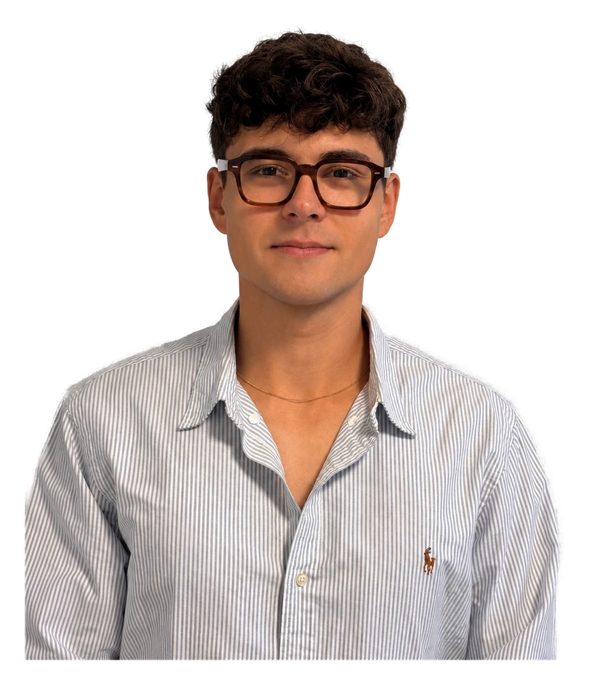

Étudiant Ingénieur · Robotique · Mécatronique
QUENTIN MORAINE
Étudiant ingénieur généraliste à l'Icam, bientôt en MSc Robotics à Cranfield. Je conçois des systèmes à la croisée de la mécanique, de l'électronique et du code.
TRAVAUX


PROCESS
Du premier croquis au produit fini : une démarche structurée, itérative, qui relie la créativité du design à la rigueur de l'ingénierie.
- 01
Croquis
Idéation rapide, recherche de formes et exploration de concepts au crayon. On pose les intentions avant la technique.
- 02
CAO
Modélisation 3D paramétrique sous SolidWorks & Inventor. Cotation, tolérances, simulations et itérations jusqu'à validation.
- 03
Prototype
Fabrication, électronique (EasyEDA / KiCad) et code embarqué. On confronte le modèle à la réalité, on mesure, on corrige.
- 04
Produit
Assemblage, tests et finitions. Un système fonctionnel, documenté et prêt à être présenté.
FAIS-LA
TOURNER
Le vrai modèle 3D de la Raspberry Pi 5 de mon projet de tri de vis. Attrape-la et fais-la pivoter — comme une pièce en CAO.
COMPÉTENCES
Programmation
- PythonIntermédiaire
- C++Débutant
CAO
- SolidWorksAvancé
- InventorIntermédiaire
Électronique
- EasyEDAIntermédiaire
- KiCadDébutant
Création
- DaVinci ResolveIntermédiaire
- LightroomIntermédiaire
- Final CutDébutant
Langues
- Français · natif
- Anglais — C1 (TOEIC 950)
- Allemand · A2
- Espagnol · A2
Et aussi
- Gestion de projet
- Aisance relationnelle
- Autodidacte & curieux

Ingénieur
en devenir
Étudiant en 4ᵉ année à l'Icam (Strasbourg), je me forme au métier d'ingénieur généraliste avec une vraie passion pour la robotique et la conception. Mécanique, électronique, code embarqué : j'aime couvrir toute la chaîne d'un projet, de l'idée au prototype testé. Je poursuis désormais en double diplôme MSc Robotics à Cranfield University.